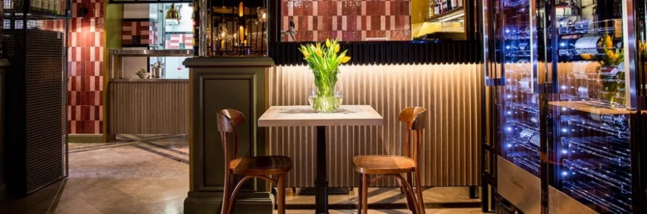
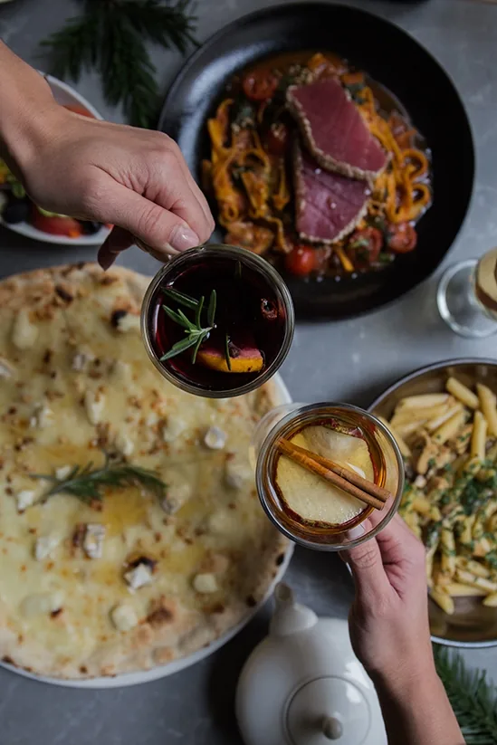
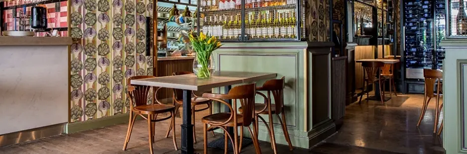
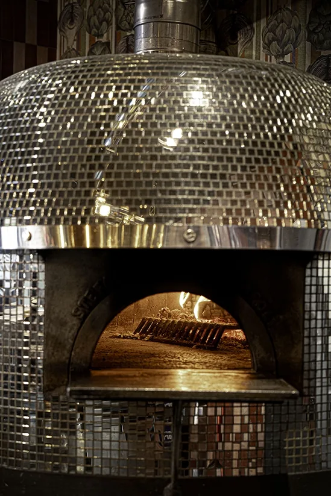
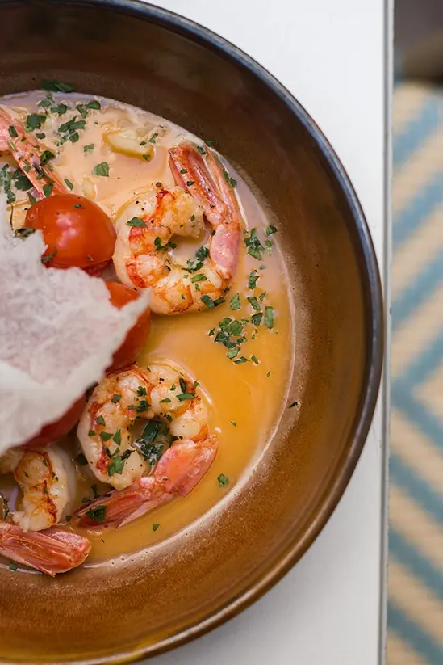
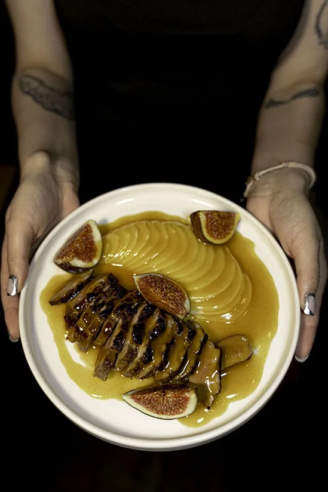
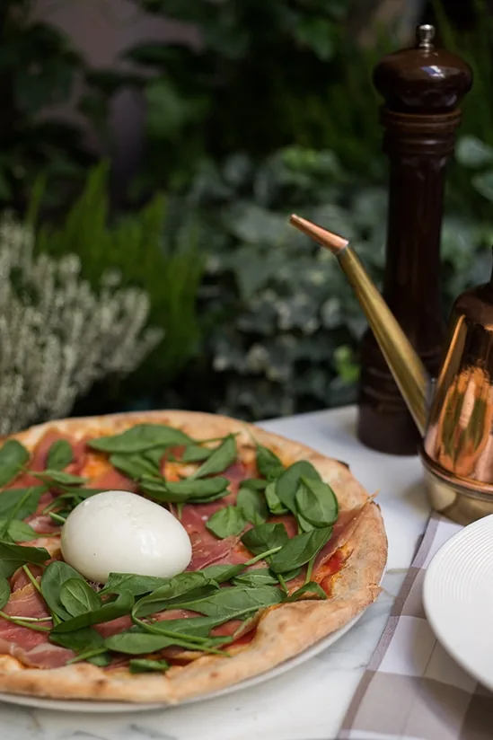
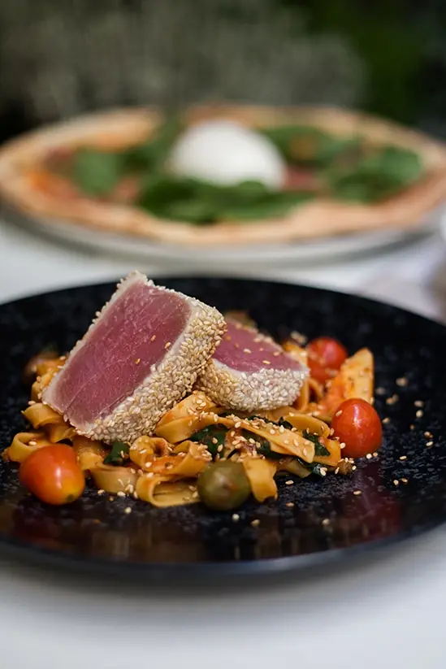
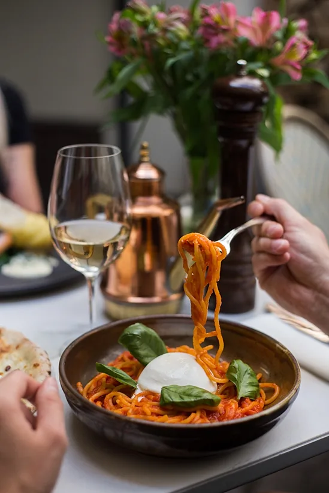
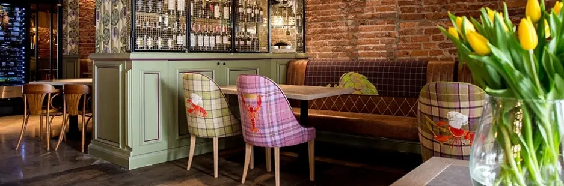

Mamma Mia
Włochy. Karmelicka 14.
Trattoria i wine bar pięć minut od Rynku. Pizza z pieca, makaron robiony na zamówienie i karta win, która sięga od Veneto po polską winnicę w Lanckoronie.

4,4 8150 opinii Google
- ★ 4,4 na 5 z 8150 opinii Google
- ✦ Karmelicka 14 — pięć minut od Rynku
- ✿ Mały taras pod lampkami
- ☾ Wszystko świeże, na zamówienie

O nas
Trattoria, nie sieciówka
Mamma Mia stoi przy Karmelickiej, kilka minut spacerem od Rynku. W środku jest ciepło i gęsto od stolików, a na zewnątrz mały dziedziniec obwieszony lampkami, który latem zapełnia się pierwszy.
Należymy do małej, niezależnej krakowskiej grupy restauracji — obok La Campany i Kogla-Mogla. Bez franczyzy i bez kuchni centralnej. Pizza wychodzi z pieca, makaron robimy na zamówienie, a na danie czeka się około czterdziestu pięciu minut, bo nic nie stoi pod lampą.
Przepyszna pizza – idealne ciasto, składniki bardzo dobrej jakości i fajnie skomponowane połączenia smaków.
Believe the hype. The food here is insane. You have to try the lasagne.

Prosto z pieca
Karta
Co gotujemy
Każde danie z opisem po polsku i angielsku, gramaturą i ceną. Ceny w złotych.
Antipasti
-
Bruschetta con Prosciutto di Parma 220 g 32 zł
Grzanki z szynką parmeńską, Grana Padano i serem ricotta
Toasted bread with Parma ham, Grana Padano and ricotta cheese
-
Burrata 140 g 38 zł
Mozzarella burrata z rukolą i pomidorkami koktajlowymi
Mozzarella burrata with rocket salad and cherry tomatoes
Polecane przez szefa
-
Carpaccio di filetto di manzo marinato con olive 120 g 48 zł
Carpaccio z marynowanej polędwicy wołowej z majonezem worcestershire, rukolą i Grana Padano
Beef loin carpaccio served with worcestershire mayonnaise, rocket salad and Grana Padano
-
Tartare di tonno 90 / 130 g 48 zł
Tatar z tuńczyka z czerwoną cebulą, sosem sriracha i szczypiorkiem
Tuna tartare with red onion, sriracha and fresh chives
-
Gamberetti stufati in salsa di vino bianco 150 g 52 zł
Krewetki argentyńskie duszone w sosie z białego wina z czosnkiem, podane z pieczonymi pomidorkami koktajlowymi
Argentinian prawns stewed in white wine sauce with garlic, served with roasted cherry tomatoes
-
Un piatto di formaggi e salumi 220 g 68 zł
Talerz serów, wędlin lub mieszany
Italian charcuterie or cheese plate
Zuppe
-
Krem pomidorowy 250 g 26 zł
Krem pomidorowo-paprykowy z mozzarellą i pesto bazyliowym
Tomato and bell pepper cream soup with mozzarella and basil pesto
Wegetariańskie
-
Zuppa di zucca 250 g 26 zł
Zupa dyniowa, płatki migdałów
Pumpkin soup, almond flakes
Wegetariańskie
Focaccia
-
Focaccia con rosmarino 130 g 26 zł
Podpłomyk z rozmarynem
Focaccia with rosemary
Wegetariańskie
-
Focaccia con aglio 130 g 26 zł
Podpłomyk z czosnkiem
Focaccia with garlic
Wegetariańskie
-
Sosy
Czosnkowy, pomidorowy
Garlic, tomato
Insalate
-
Insalata di pollo 360 g 48 zł
Kompozycja sałat, pierś z kurczaka pieczona w przyprawach, pomidorki koktajlowe, rukola, pomidory, ogórek, migdały
Salad composition, chicken breast baked in herbs, cherry tomatoes, rocket salad, tomatoes, cucumber, almond flakes
-
Insalata di formaggio di capra 320 g 48 zł
Grillowany kozi ser, sałata rzymska, orzechy włoskie, gruszka, winogrona
Grilled goat cheese, romaine lettuce, walnuts, pear, grapes
Wegetariańskie
Pizza
-
Margherita 300 g 38 zł
Sos pomidorowy, mozzarella Fior di Latte
Tomato sauce, mozzarella Fior di Latte
Wegetariańskie
-
Capricciosa 420 g 42 zł
Sos pomidorowy, mozzarella Fior di Latte, szynka Cotto, pieczarki portobello
Tomato sauce, mozzarella Fior di Latte, Cotto ham, portobello mushrooms
-
Zucca 250 g 46 zł
Sos pomidorowy, Fior di Latte, ricotta, salsiccia, pieczona dynia, rukola, pestki dyni
Tomato sauce, Fior di Latte, ricotta, salsiccia, roasted pumpkin, arugula, pumpkin seeds
Polecane przez szefa
-
Spinaci 400 g 42 zł
Sos pomidorowy, mozzarella Fior di Latte, szpinak, czosnek, ricotta
Tomato sauce, mozzarella Fior di Latte, spinach, garlic, ricotta
Wegetariańskie
-
Salame 390 g 44 zł
Sos pomidorowy, mozzarella Fior di Latte, salami Napoli, oliwki zielone
Tomato sauce, mozzarella Fior di Latte, salami Napoli, green olives
-
Salame piccante 410 g 44 zł
Sos pomidorowy, mozzarella Fior di Latte, salami spianate, grillowane warzywa: papryka, cukinia, bakłażan, czerwona cebula
Tomato sauce, mozzarella Fior di Latte, salami spianate, grilled vegetables: pepper, zucchini, eggplant, red onion
Polecane przez szefaPikantne
-
Quattro Formaggi 350 g 44 zł
Mozzarella Fior di Latte, gorgonzola, kozi ser dojrzewający, ser ricotta
Mozzarella Fior di Latte, gorgonzola, aged goat cheese, ricotta cheese
Wegetariańskie
-
Mamma Mia 275 g 42 zł
Mozzarella Fior di Latte, kozi ser, orzeszki piniowe, miód
Mozzarella Fior di Latte, goat cheese, pine nuts, honey
Wegetariańskie
-
Parma 350 g 48 zł
Sos pomidorowy, mozzarella Fior di Latte, szynka parmeńska, rukola
Tomato sauce, mozzarella Fior di Latte, Parma ham, rocket salad
-
Diavola 360 g 44 zł
Sos pomidorowy, mozzarella Fior di Latte, salami spianate, papryczka jalapeño, peperoncino
Tomato sauce, mozzarella Fior di Latte, salami spianate, jalapeño, peperoncino pepper
Pikantne
-
Parma e Burrata 450 g 54 zł
Sos pomidorowy, mozzarella Fior di Latte, mozzarella burrata, szynka parmeńska, szpinak baby
Tomato sauce, mozzarella Fior di Latte, mozzarella burrata, Parma ham, baby spinach
Pasta e risotto
-
Tagliatelle alla primavera 390 g 42 zł
Tagliatelle w sosie śmietanowym z zielonymi warzywami i Grana Padano
Tagliatelle in a creamy sauce with green vegetables and Grana Padano
Wegetariańskie
-
Spaghetti alla carbonara 365 g 44 zł
Spaghetti w sosie serowo-śmietanowym z żółtkiem, Grana Padano i guanciale
Spaghetti in cheese and cream sauce with egg yolk, Grana Padano and guanciale
-
Pappardelle con pollo e funghi 330 g 46 zł
Pappardelle w sosie śmietanowym z kurczakiem, grzybami i natką pietruszki
Pappardelle in cream sauce with chicken, mushrooms and parsley
-
Spaghetti al pomodoro con burrata 330 g 48 zł
Spaghetti w sosie pomidorowym z burratą
Spaghetti in tomato sauce with burrata
Wegetariańskie
-
Pappardelle con manzo e pomodoro 270 g 56 zł
Pappardelle z polędwicą w sosie śmietanowo-pomidorowym z czosnkiem, chilli, tymiankiem i natką pietruszki
Pappardelle with beef loin in tomato and cream sauce with garlic, chilli pepper, thyme and parsley
Polecane przez szefaPikantne
-
Tagliolini con gamberetti e spinaci 360 g 56 zł
Tagliolini w sosie z białego wina z krewetkami, szpinakiem i czosnkiem
Tagliolini in white wine sauce with prawns, spinach and garlic
-
Lasagne al ragù 340 g 49 zł
Lazania mięsna z pieca podawana z lekko pikantnym sosem ze świeżych pomidorów, zapiekana z Grana Padano
Oven-baked lasagna with meat, slightly spicy fresh tomato sauce and Grana Padano cheese
Pikantne
-
Risotto con gamberetti 340 g 56 zł
Risotto z krewetkami w pikantnym sosie pomidorowo-śmietanowym z natką pietruszki
Risotto with prawns in a spicy tomato and cream sauce with parsley
PikantneBezglutenowe
-
Ravioli con spinaci e ricotta 200 g 44 zł
Ravioli ze szpinakiem i ricottą podawane z sosem maślano-szałwiowym
Ravioli with spinach and ricotta served with butter and sage sauce
Wegetariańskie
-
Tagliatelle con salmone 340 g 52 zł
Tagliatelle z kawałkami łososia, groszkiem cukrowym i suszonymi pomidorami w sosie z mascarpone z natką pietruszki
Tagliatelle with salmon, sugar peas and dried tomatoes in a mascarpone sauce with parsley
Pesce
-
Salmone con spinaci 150 / 290 g 64 zł
Łosoś z duszonym szpinakiem, czosnkiem, ziemniakiem ogniskowym i sosem winno-maślanym
Salmon with stewed spinach, garlic, roasted potatoes and wine butter sauce
Bezglutenowe
-
Bistecca di tonno alla griglia 140 / 380 g 74 zł
Grillowany stek z tuńczyka z białym sezamem, serwowany na makaronie z czarnymi oliwkami, kaparami, anchois i karczochami w sosie pomidorowo-ostrygowym
Grilled tuna steak with white sesame served on pasta with black olives, capers, anchovies and artichokes in tomato and oyster sauce
Polecane przez szefa
Carne
-
Petto d'anatra arrosto in salsa 200 / 430 g 68 zł
Pieczona pierś z kaczki sous vide w sosie miodowo-pomarańczowym z kawałkami świeżej gruszki i figi, serwowana z gnocchi
Baked duck breast sous vide in honey and orange sauce with fresh pear and fig, served with gnocchi
Polecane przez szefa
-
Saltimbocca 150 / 255 g 74 zł
Kotleciki cielęce duszone w białym winie z szałwią, szynką parmeńską i groszkiem cukrowym, serwowane z gnocchi
Veal chops stewed in white wine with sage, Parma ham and snap peas, served with gnocchi
-
Filetto di manzo alla griglia 180 / 270 g 86 zł
Sezonowana polędwica wołowa z grilla, ziemniaki z rozmarynem, sos z zielonego pieprzu, szpinak
Grilled beef loin served with green pepper sauce, rosemary potatoes and spinach
Bezglutenowe
Contorni
-
Patate al forno con rosmarino 180 g 16 zł
Ziemniaki pieczone z rozmarynem
Baked potatoes with rosemary
BezglutenoweWegetariańskie
-
Insalata mista 130 g 16 zł
Sałata dębowa, pomidorki koktajlowe, oliwki, rukola
Oak leaf lettuce, cherry tomatoes, olives, arugula
BezglutenoweWegetariańskie
-
Spinaci con aglio 120 g 16 zł
Świeży szpinak duszony z czosnkiem
Spinach stewed with garlic
Bezglutenowe
-
Gnocchi 180 g 16 zł
Wegetariańskie
Dolci
-
Tiramisù 130 g 28 zł
-
Crème brûlée 140 g 28 zł
Bezglutenowe
-
Torta al cioccolato 170 g 32 zł
Pieczone ciastko czekoladowe z płynnym środkiem, sos ze świeżych pomarańczy
A la minute soft chocolate cake, fresh orange sauce
Napoje
Koktajle
-
Pornstar Martini 40 zł
Wódka waniliowa, puree z marakui, syrop cukrowy, prosecco
Vanilla vodka, passion fruit purée, sugar syrup, prosecco
-
Negroni 38 zł
Campari, wermut Rosso, Tanqueray no. Ten, pomarańcza
Campari, Rosso vermouth, Tanqueray no. Ten, orange
-
G&T Orange 38 zł
Tanqueray Flor de Sevilla, tonic, pomarańcza
Tanqueray Flor de Sevilla, tonic, orange
-
Whisky Sour 36 zł
Johnnie Walker Black Label, sok z cytryny, syrop cukrowy, białko, angostura
Johnnie Walker Black Label, lemon juice, sugar syrup, egg white, angostura
-
Hugo Spritz 36 zł
Aperitivo Sambuco, prosecco, woda gazowana, limonka, mięta
Aperitivo Sambuco, prosecco, sparkling water, lime, mint
-
Aperol Spritz 38 zł
Aperol, prosecco, woda gazowana, pomarańcza
Aperol, prosecco, sparkling water, orange
-
Amaretto Sour 36 zł
Likier Amaretto, Bulleit Bourbon, białko, syrop cukrowy
Amaretto liqueur, Bulleit Bourbon, egg white, sugar syrup
Mocktaile
-
Aperitivo 0% Spritz 26 zł
Gasco Aperitivo bitter, woda gazowana, pomarańcza
Gasco Aperitivo bitter, sparkling water, orange
-
G&T 0% 30 zł
Gin 0%, tonic, limonka
Gin 0%, tonic, lime
-
Limoncello Spritz 0% 28 zł
Limoncello 0%, tonic, cytryna
Limoncello 0%, tonic, lemon
Wino białe — kieliszek 125 ml / butelka
-
Pinot Grigio Asolo Montello 28 / 140 zł
Dal Bello, Veneto, Włochy
Dal Bello, Veneto, Italy
-
Sauvignon Blanc Pradio Sobaja 170 zł
Cielo e Terra, Włochy
Cielo e Terra, Italy
-
Pecorino 32 / 150 zł
Casal Farneto Quirico, Włochy
Casal Farneto Quirico, Italy
-
Riesling Feinherb St Cuvée #10 33 / 160 zł
Gebrüder Steffen, Mozela, Niemcy
Gebrüder Steffen, Mosel, Germany
-
Sauvignon Blanc 32 / 155 zł
Cuatro Rayas, Hiszpania
Cuatro Rayas, Spain
-
Chablis 370 zł
Domaine Hamelin, Burgundia, Francja
Domaine Hamelin, Burgundy, France
-
Solaris 43 / 210 zł
Winnica Wzgórze Lanckorońskie, Polska
Wzgórze Lanckorońskie, Poland
Wino różowe
-
Clarendelle Rosé 45 / 220 zł
Clarence Dillon, Bordeaux, Francja
Clarence Dillon, Bordeaux, France
Wino czerwone
-
Merlot Asolo Montello 29 / 145 zł
Dal Bello, Veneto, Włochy
Dal Bello, Veneto, Italy
-
Chianti 150 zł
Colli Sensei, Włochy
Colli Sensei, Italy
-
Ripasso Valpolicella Classico Superiore 47 / 230 zł
Monte del Frà, Veneto, Włochy
Monte del Frà, Veneto, Italy
-
Primitivo 31 / 150 zł
Gran Sasso, Włochy
Gran Sasso, Italy
-
Barbera d'Asti Desideria 210 zł
Guasti, Piemont, Włochy
Guasti, Piedmont, Italy
-
Rioja Crianza 47 / 230 zł
Ramón Bilbao, La Rioja, Hiszpania
Ramón Bilbao, La Rioja, Spain
-
Malbec Teia 39 / 220 zł
Bodega Lagrande, Argentyna
Bodega Lagrande, Argentina
Wina musujące i deserowe
-
Prosecco DOC Treviso Brut Millesimato 29 / 140 zł
Dal Bello, Włochy
Dal Bello, Italy
-
Prosecco Rosé Brut 32 / 155 zł
Montelvini, Włochy
Montelvini, Italy
-
Moscato d'Asti 32 / 155 zł
Araldica, Włochy
Araldica, Italy
-
Evadne Verdejo 0% 29 / 140 zł
Bodegas Verdúguez — bezalkoholowe
Bodegas Verdúguez — non-alcoholic
-
Fizzero Sparkling 0% 29 / 140 zł
De Bortoli Wines — bezalkoholowe
De Bortoli Wines — non-alcoholic
Piwo
-
Peroni Nastro Azzurro 20 zł
beczkowe, 400 ml
draft, 400 ml
-
Książęce Złote Pszeniczne 18 / 20 zł
beczkowe, 330 / 500 ml
draft, 330 / 500 ml
-
Książęce Lager 18 / 20 zł
beczkowe, 330 / 500 ml
draft, 330 / 500 ml
-
Książęce IPA 21 zł
butelkowe, 500 ml
bottled, 500 ml
-
Książęce Ciemne Łagodne 21 zł
butelkowe, 500 ml
bottled, 500 ml
-
Książęce Czerwony Lager 21 zł
butelkowe, 500 ml
bottled, 500 ml
-
Captain Jack Original / Citrus Tonic 18 zł
smakowe, 400 ml
flavoured, 400 ml
-
Hardmade Exotic Kumkwat / Yuzu Lemon 18 zł
smakowe, 400 ml
flavoured, 400 ml
-
Single Citrus Smoothie Juice IPA 25 zł
krakowskie kraftowe, 500 ml
Cracow craft, 500 ml
-
Czternastka Pils 24 zł
krakowskie kraftowe, 500 ml
Cracow craft, 500 ml
-
Peroni Nastro Azzurro 0% 18 zł
bezalkoholowe, 330 ml
non-alcoholic, 330 ml
-
Lech Free Lager / Lime Mint 18 zł
bezalkoholowe, 330 ml
non-alcoholic, 330 ml
-
Książęce Złote Pszeniczne 0% / IPA 0% 21 zł
bezalkoholowe, 500 ml
non-alcoholic, 500 ml
Napoje gorące
-
Espresso 14 zł
-
Espresso Doppio 16 zł
-
Espresso Macchiato 15 zł
-
Americano 15 zł
-
Cappuccino 17 zł
-
Flat White 17 zł
-
Latte 18 zł
-
Italian Coffee 29 zł
-
Irish Coffee 29 zł
-
Baileys Coffee 28 zł
-
Herbata Newby 22 zł
Earl Grey, assam, English breakfast, jasmin blossom, green tea gunpowder, mango strawberry, rosehip, black tropical
-
Herbata Damman 22 zł
Malina–marakuja, English breakfast, rumianek, Earl Grey, mięta, rooibos cytrusowo-owocowy, jaśminowa, zielona Yunnan Vert
Raspberry–passion fruit, English breakfast, camomile, Earl Grey, mint, citrus-fruit rooibos, jasmine, green Yunnan Vert
Napoje zimne
-
Coca-Cola Zero / Original Taste 15 zł
250 ml
-
Fanta / Sprite 15 zł
250 ml
-
Kinley Tonic Water / Pink Aromatic Berry 15 zł
250 ml
-
FuzeTea 16 zł
Brzoskwiniowa z hibiskusem, cytrynowa z trawą cytrynową
Peach & hibiscus, lemon & lemongrass
-
Soki Cappy 15 zł
Pomarańcza, jabłko
Orange, apple
-
Burn 18 zł
-
Lemoniada klasyczna 22 zł
Classic lemonade
-
Lemoniada pomarańcza / cytryna 22 zł
Orange / lemon lemonade
-
Lemoniada marakuja 24 zł
Passion fruit lemonade
-
Świeżo wyciskane soki 24 zł
Pomarańcza, grejpfrut lub mix, 250 ml
Orange, grapefruit or mixed, 250 ml
-
Kinga Pienińska 14 / 20 zł
Niegazowana / gazowana, 330 / 700 ml
Still / sparkling, 330 / 700 ml
-
Kropla Beskidu 14 / 20 zł
Niegazowana / gazowana, 330 / 700 ml
Still / sparkling, 330 / 700 ml
Pełna karta alkoholi
Whiskey & Bourbon 40 ml
- Johnnie Walker Black Label 12 Y.O.28 zł
- Johnnie Walker Gold Label Reserve40 zł
- Bulleit Bourbon Frontier26 zł
- Bulleit 95 Rye Frontier27 zł
- Talisker Single Malt 10 Y.O.45 zł
- Singleton Luscious Nectar 12 Y.O.30 zł
- Jameson26 zł
Gin 40 ml
- Bombay Sapphire30 zł
- Hendrick's36 zł
- Tanqueray Flor de Sevilla31 zł
- Tanqueray no. Ten33 zł
- Gordon's Pink26 zł
- Gordon's London Dry26 zł
- Gordon's 0.0% Alcohol Free24 zł
Rum 40 ml
- Captain Morgan26 zł
- The Kraken Black Spiced28 zł
- Dictador 12 Y.O.35 zł
- Zacapa 23 Y.O.44 zł
Wódka 40 ml
- Chopin Rye24 zł
- Chopin Potato29 zł
- Chopin Młody Ziemniak38 zł
- Żubrówka Bison Grass22 zł
- Krzeska ziołowa36 zł
Tequila 40 ml
- Don Julio Blanco39 zł
- Don Julio Reposado37 zł
Cognac & Brandy 40 ml
- Metaxa *****30 zł
- Rémy Martin V.S.O.P.40 zł
- Rémy Martin X.O.99 zł
Wermut 80 ml
- Bianco Tosti 1820 Italia26 zł
- Rosso Tosti 1820 Italia26 zł
Likiery & digestif 40 ml
- Chopin karmel z solą morską22 zł
- Chopin czekoladowy22 zł
- Chopin Etiuda wiśniowa26 zł
- Amaro Lucano24 zł
- Cointreau24 zł
- Sambuca24 zł
- Kahlúa de Café24 zł
- Amaretto22 zł
- Baileys Irish Cream24 zł
- Campari Bitter22 zł
- Fernet-Branca24 zł
- Jägermeister26 zł
- Limoncello26 zł
- Paesano Pistacchio25 zł
Grappa
- Giare Grappa: Amarone / Chardonnay / Gewürztraminer — 40 ml39 zł
- Degustacja grappy — 3 × 20 ml57 zł
Wszystkie dania przygotowujemy wyłącznie ze świeżych produktów, na Państwa indywidualne zamówienie. Czas oczekiwania wynosi około 45 minut.
Cenimy sobie możliwość podziękowania za obsługę zespołu kelnerskiego poprzez serwis w przedziale od 12,5% do 17%. Pozostawiamy to do Państwa uznania. Przy rezerwacji powyżej 4 osób doliczamy serwis 12,5%.
Karta menu z wyszczególnionymi alergenami znajduje się u managera restauracji. Pół porcji kosztuje 60% ceny. W naszej kuchni używamy produktów zawierających gluten, więc śladowe ilości mogą pojawić się również w daniach bezglutenowych; na życzenie podajemy makaron bezglutenowy. Przy zamówieniach na wynos doliczamy opłatę 2 zł za opakowanie.
Galeria
Prosto z kuchni







Taras i rezerwacje
Zarezerwuj, zanim przyjdziesz
W piątkowe i sobotnie wieczory, a także przy każdej okazji, która się liczy, sala zapełnia się w całości. Taras na dziedzińcu ma kilka stolików i schodzą pierwsze. Rezerwacja zajmuje minutę i oszczędza stania na Karmelickiej.
Albo zadzwoń: +48 12 430 04 92
Rezerwuj stolikBony upominkowe
Podaruj komuś wieczór
Bon do Mamma Mia sprawdza się dla rodziny, przyjaciół i współpracowników. Wybierasz dowolną kwotę i kupujesz online w kilka minut — albo pytasz o niego na miejscu, w restauracji.
Termin ważności i aktualne warunki zobaczysz w trakcie zakupu. Bony obsługuje CoverManager, ten sam system co nasze rezerwacje.
Kup bon onlineKontakt
Jak nas znaleźć
| Poniedziałek – czwartek | 13:00 – 22:00 |
|---|---|
| Piątek | 13:00 – 23:00 |
| Sobota | 12:00 – 23:00 |
| Niedziela | 12:00 – 22:00 |
- Adres
- Karmelicka 14
31-128 Kraków - Telefon
- +48 12 430 04 92
- Dojazd
- Pięć minut pieszo od Rynku Głównego. Przystanek tramwajowy Teatr Bagatela, 300 metrów.